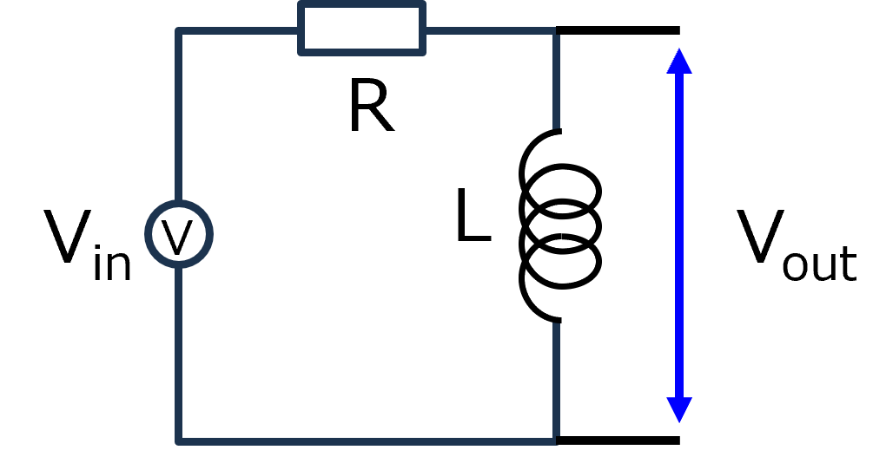

回路-24-2
RLハイパスフィルタを電流から考える
せっかく，RL直列回路での電流を計算したので，電流から，各素子間の電圧を求めていきましょう．
今回は，定常状態について考えていきます．
したがって，
過渡項は考えない
積分は不定積分
として計算します．

・基本関係式
\(\Large \displaystyle V_C(t) = \frac{1}{ C} \int I(t) \ dt \)
\(\Large \displaystyle V_L(t) = L \ \frac{d}{ dt} I(t) \)
\(\Large \displaystyle V_R(t) = R \cdot I(t) \)
RL直列回路においては，定常状態での電流は，
\(\Large \displaystyle I(t) = \frac{V_0 \ e^{ -j \theta}}{ \sqrt{R^2 +( \omega L)^2}} \cdot e^{j \omega t} \)
\(\Large tan \ (- \theta) = \displaystyle \frac {\omega L }{R}\)
もしくは，
\(\Large \displaystyle I(t) = \frac{V_0 \ e^{ j \theta}}{ \sqrt{R^2 +( \omega L)^2}} \cdot e^{j \omega t} \)
\(\Large tan \ ( \theta) = \displaystyle - \frac {\omega L }{R}\)
となります．
・L
\(\Large \displaystyle V_L(t) = L \frac{d}{dt} \frac{V_0 \ e^{ j \theta}}{ \sqrt{R^2 +( \omega L)^2}} \cdot e^{j \omega t} \)
\(\Large \displaystyle =\frac{V_0 \ e^{ j \theta}}{ \sqrt{R^2 +( \omega L)^2}} \cdot j \omega \cdot e^{j \omega t} \)
ここで，
\(\Large \displaystyle e^{ j \theta} = cos \ \theta + j \ sin \ \theta \)
\(\Large \displaystyle e^{ j \frac{\pi}{2}} = cos \ \frac{\pi}{2} + j \ sin \ \frac{\pi}{2} = j \)
より，
\(\Large \displaystyle V_L(t) =V_0 \frac{\omega L }{ \sqrt{R^2 +( \omega L)^2}} \cdot e^{ j \theta} \cdot j \cdot e^{j \omega t} \)
\(\Large \displaystyle =V_0 \frac{\omega L }{ \sqrt{R^2 +( \omega L)^2}} \cdot e^{ j \theta} \cdot e^{ j \frac{\pi}{2}} \cdot e^{j \omega t} \)
\(\Large \displaystyle =V_0 \frac{\omega L }{ \sqrt{R^2 +( \omega L)^2}} \cdot e^{j (\omega t + \theta +\frac{\pi}{2})} \)
ここで，
\(\Large \theta = \displaystyle tan^{-1} \left(-\frac {\omega L }{R} \right)\)
となるので，
\(\Large \displaystyle V_C(t) = \frac{V_0 \ e^{ j \theta}}{ \sqrt{(\omega RC)^2 + 1}} \cdot \ e^{j (\omega t - \varphi) } \)
\(\Large \varphi = - tan^{-1} (\omega RC)\)
となり，ここ，で計算したローパスフィルタと一致します．